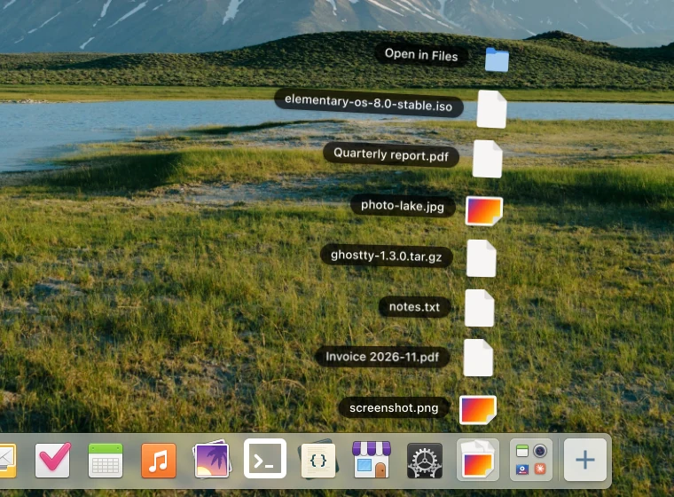
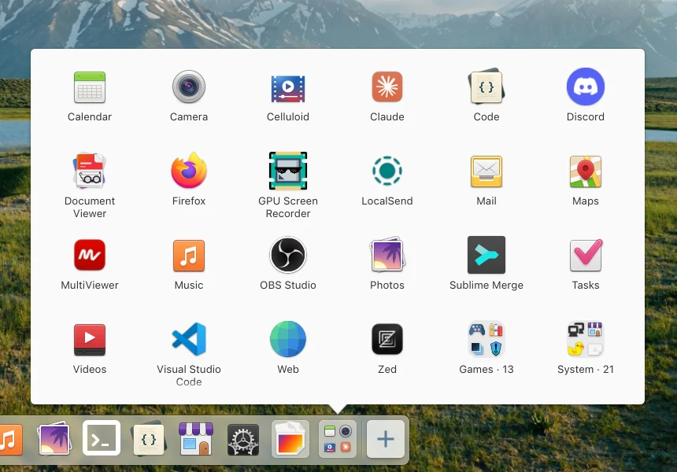
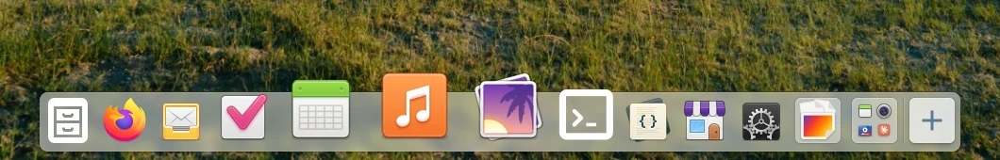
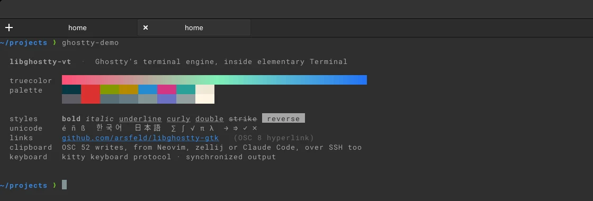

Folder stacks
Drag a folder from Files onto the dock and it opens as a fan, newest file nearest the dock. Right-click a stack to change its view or sort, or to remove it.
elementary's dock with folder stacks and zoom. Replaces io.elementary.dock.
Drag a folder from Files onto the dock and it opens as a fan, newest file nearest the dock. Right-click a stack to change its view or sort, or to remove it.

The Applications stack shows installed apps as a grid, with app folders as folders. Any stack can be a grid or a fan.


Icons near the pointer grow, drawn from the icon theme at the zoomed size. On by default.
gsettings set io.elementary.dock zoom-size 84
gsettings set io.elementary.dock zoom-enabled falseA Gala plugin for PaperWM-style tiling. Each workspace on the primary monitor is a horizontal strip of columns that scrolls to follow focus.
New windows open to the right of the focused one. A column can hold several windows; dialogs float. Super+scroll pans the strip.
Super+arrows focus
Super+Shift+arrows move
Super+R width ⅓ ½ ⅔
Super+M full width
Super+I / Super+U slurp / barf
Super+C centre
Super+Shift+F floatWorkspace switching moves to Ctrl+Super+←/→. Half-screen and edge tiling are off, and
move-to-monitor is unbound. Keys you have set yourself are kept.
elementary Terminal with VTE swapped for libghostty-gtk,
a GTK 4 widget on libghostty-vt. Replaces
io.elementary.terminal; tabs, themes and paste protection are unchanged.

The terminal widget Terminal uses. It implements the subset of Vte.Terminal that elementary
Terminal needs, under GhosttyGtk. libghostty-vt is linked statically; a VAPI is included.
sudo apt install libghostty-gtk-dev
pkg-config --cflags --libs ghostty-gtk-1On elementary OS 8 (noble, amd64). Install any of the packages.
signed-by limits the key to this repository.
$ sudo curl -fsSLo /usr/share/keyrings/pantheon-extras.gpg https://arsfeld.github.io/pantheon-extras/pantheon-extras.gpg $ echo "deb [signed-by=/usr/share/keyrings/pantheon-extras.gpg] https://arsfeld.github.io/pantheon-extras noble main" \ | sudo tee /etc/apt/sources.list.d/pantheon-extras.list $ sudo apt update
The dock and tiling take effect at your next login.
$ sudo apt install io.elementary.dock-extras $ sudo apt install pantheon-paper $ sudo apt install io.elementary.terminal-ghostty
Reinstalling elementary's packages replaces these. Removing pantheon-paper restores Pantheon's keys.
$ sudo apt install io.elementary.dock io.elementary.terminal $ sudo apt remove pantheon-paper
arsfeld apt <alex@rosenfeld.one>, RSA 4096
4D10 1C42 0595 DC60 79F4 E577 0D5C 3479 3F4F 06A7
Built in elementary's OS 8 container by each project's CI (elementary-dock, pantheon-paper, elementary-terminal, libghostty-gtk). Each publish is test-installed in a clean container.